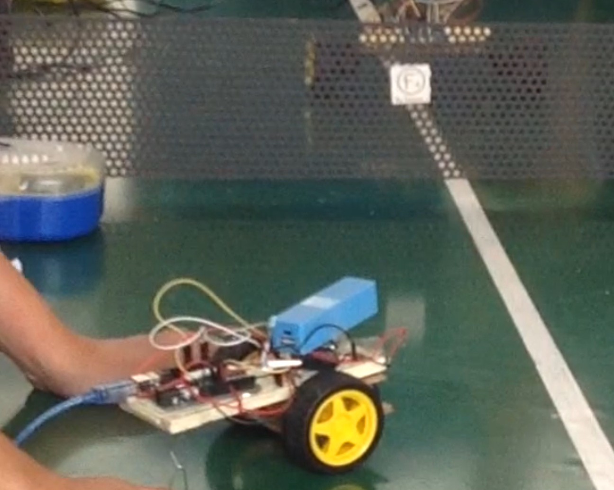

Uso de herramientas
Herramientas tecnológicas y software en los que tengo experiencia
Python(básico)
Java
Nodejs
MS-SQL Server
Matlab
Microsoft Excel
Adobe Photoshop
Microsoft Word
Microsoft Power Point
Mis aspiraciones
A continuación se presentan mis aspiraciones e intereses orientadas a la carrera que estudio
Diseño de front-end
Lo importante en una aplicación es que pueda ser utilizada y cumplir con su objetivo. Esto último es lo mínimo esperado, el hecho que su interfaz motive al usuario a conocer
y explorar todas sus funcionalidades, es para mi un indicador de satisfacción y una motivación para mejorar.
Aprendizaje y transmitir conocimiento
Uno de mis grandes intereses es el uso de herramientas orientadas a la parte educativa,
de manera que a través de la tecnología se transmita el conocimiento, y a su vez, transmitir conocimiento de herramientas tecnológicas y fundamentos
para introducir al pensamiento lógico-matemático y exploración de herramientas de la informática.
Testing
Es un tema que desde cuando conocí sobre ello en una clase y en un recorrido a empresas de software, me ha llamado la atencion
porque es una tarea y un conjunto de metodologías que asegura el funcionamiento y la seguridad de una aplicación o software, colocándonos desde la interfaz de usuario con conocimiento de "hacker",
así también pienso que sería divertido.
Bases de datos
Existe un amplio universo de posibilidades y tareas a desempeñar en una base de datos. Es necesario tener conocimiento sobre
la mejor manera de organizar la información y relacionarla, de manera que los datos almacenados se puedan explotar de una forma eficiente. También me interesa
personalmente la parte de la administración o mantenimiento de una base de datos, que como todo rol, implica mucha responsabilidad y una metodología estricta para su desempeño.
Mantenimiento de hardware y/o software
Tengo un interés en explorar los componentes de una máquina y darles mantenimiento, para que de esta manera se brinde un mejor y más óptimo uso
tanto a los componentes electrónicos físicos como el almacenamiento, así también componentes de software que requieran de depuración para una experiencia de usuario más eficiente.
Portafolio
Algunos proyectos y trabajos académicos en los que he participado

Mama Duck
Proyecto Académico
Mis responsabilidades actuales en el proyecto
Prueba y adaptación de hardware para prototipo.
Tecnologias utilizadas
Arduino IDE, Nodejs, SQL Server
Detalles
Este proyecto académico surge de la iniciativa de crear un sistema auxiliar en casos de emergencia o catástrofes,
permitiendo una mejor comunicación en caso de ayuda ver más
Inicio del proyecto: enero 2020, actualmente en desarrollo.
Uno de los objetivos es implementar con éxito un prototipo de prueba en un espacio delimitado para aprobar su funcionamiento. menos
Uno de los objetivos es implementar con éxito un prototipo de prueba en un espacio delimitado para aprobar su funcionamiento. menos
POS para establecimientos de alimentos y bebidas
Proyecto Académico
Mis contribuciones
Diseñador de interfaces, base de datos, documentación de software.
Tecnologias utilizadas
Pencil, SQL-Server, CMMI Standard, Java, Dia, LucidChart
Detalles
Software orientado a Puntos de venta o Point of Sale (POS) para establecimientos de alimentos y bebidas.
Este programa funciona como auxiliar en creación de órdenes, catálogos de platillos, de promociones, registros de clientes, y realización de arqueos en cortes de caja.
more
Este programa funciona como auxiliar en creación de órdenes, catálogos de platillos, de promociones, registros de clientes, y realización de arqueos en cortes de caja.
more
Se realizó su diseño estructural en UML(2020),sus prototipos en Pencil(2020), código fuente de funcionamiento de la creación de órdenes y registro de cuentas diarias en Java (2019) menos
Actualmente se encuentra en desarrollo en la parte de backend y base de datos. Proyecto no comercial, para propósitos de prácticas académicas.
Desarrollo de interfaz para servicio de bebidas
Mis contribuciones
Diseño y desarrollo de código fuente
Tecnologías utilizadas
Java, Netbeans
Descripción
Una introducción a la programación orientada a objetos y al uso de Frames de Java en Netbeans.
Este programa brinda al usuario opciones para elegir un café, su cantidad y enviar a una orden el pedido, mostrándose en una tabla para impresion de ticket y cálculo de importe.
Código fuente elaborado para la materia de programación orientada a objetos, noviembre de 2018. Aplicación orientada a fines educativos y de práctica.
Este programa brinda al usuario opciones para elegir un café, su cantidad y enviar a una orden el pedido, mostrándose en una tabla para impresion de ticket y cálculo de importe.
Código fuente elaborado para la materia de programación orientada a objetos, noviembre de 2018. Aplicación orientada a fines educativos y de práctica.
- 

Prototipo de Robot de carro
Mi aportación
Investigación, construcción y programación del prototipo.
Herramientas
ArduinoIDE, componentes electrónicos.
Descripción
Este fue un proyecto para una exposición de área de formación en mis estudios de Bachillerato. Esta práctica tuvo dos versiones, la primera es
movimiento mecánico de las ruedas hacia adelante y en retroceso, y la segunda se utilizó un sensor ultrasónico y un módulo de
bluetooth, controlando sus direccionamientos a través de un dispositivo con bluetooth como un celular. Se descubrieron posibles aplicaciones como la de
un seguidor de línea. Fue construido y programado en mayo de 2017, para la feria de informática del colegio Fray Pedro de Gante.
Programa juego calabozo
Mi contribución
Programación código fuente
Lenguaje C, DevC++
Descripción
Este lo considero personalmente un primer programa en C, que es el primer lenguaje de programación que apendí en mi carrera.
Consiste en un juego simple, montado sobre un tablero con objetos aleatorios, como pozos, peleas con posibilidad de ganar o perder, acumulando puntos por cada movimiento.
Fue elaborado en noviembre de 2017 y gracias a este programa me fui encaminando a la lógica de la programación. Fue un examen para la materia de programación I y se planea realizar mejoras
para utilizarse con fines educativos.